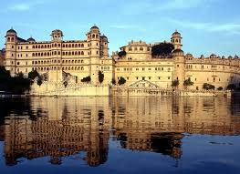
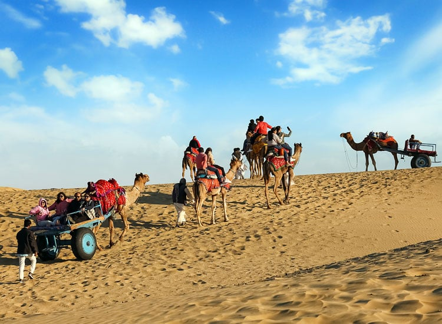
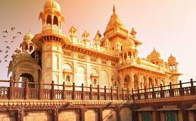

Rajasthan
Jaipur

Jaipur, the “Pink City”, is famous for its palaces, forts, and vibrant culture.
Must-visit spots include Amer Fort, City Palace, and Hawa Mahal.
- ⏰ Best Time: October – March
- 💰 Budget: ₹6,000 – ₹10,000 (3 days)
- 👨💼 Guide: Available for historical tours
- 🌤️ Weather: Pleasant winters, hot summers
- 📍 Location: Rajasthan, India
Udaipur

Udaipur, the “City of Lakes”, is famous for Lake Pichola, City Palace, and romantic palaces.
It is considered one of India’s most picturesque cities.
- ⏰ Best Time: September – March
- 💰 Budget: ₹5,000 – ₹9,000 (3 days)
- 👨💼 Guide: Optional, available for palace tours
- 🌤️ Weather: Pleasant, 10°C – 28°C
- 📍 Location: Rajasthan, India
Jaisalmer

Jaisalmer, the “Golden City”, is famous for its desert forts, camel safaris, and Thar Desert landscapes.
- ⏰ Best Time: October – March
- 💰 Budget: ₹6,000 – ₹10,000 (3 days)
- 👨💼 Guide: Recommended for desert safari
- 🌤️ Weather: Warm during day, cold at night
- 📍 Location: Rajasthan, India
Jodhpur

Jodhpur, the “Blue City”, is famous for Mehrangarh Fort, Umaid Bhawan Palace, and its vibrant old city.
- ⏰ Best Time: October – March
- 💰 Budget: ₹5,000 – ₹9,000 (2–3 days)
- 👨💼 Guide: Available for historical and cultural tours
- 🌤️ Weather: Pleasant winters, hot summers
- 📍 Location: Rajasthan, India